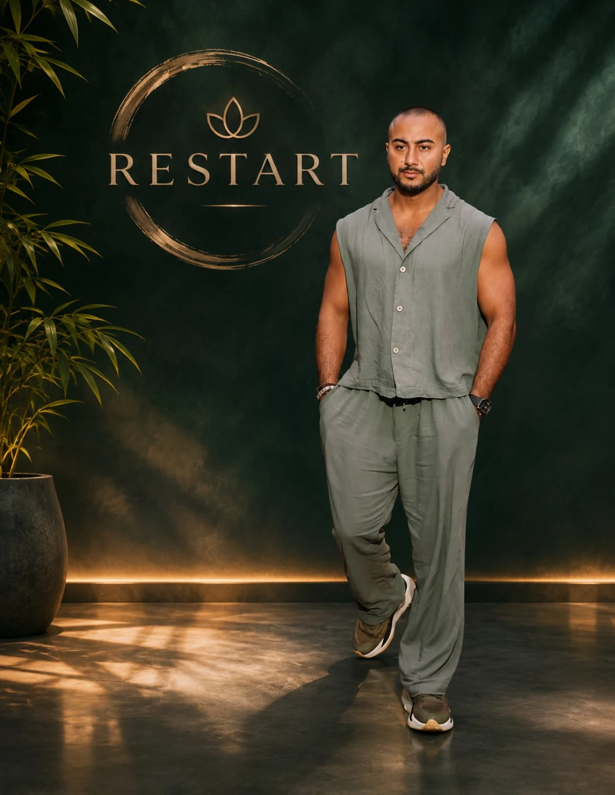

Программа на 56 дней
Восемь этапов от первого шага до самостоятельной практики.
Elxan Gülmalıyev · основатель RESTART
Школа движения, внимания и дисциплины. Начните с одного действия и перенесите его в повседневную жизнь.

Не стать другим. Раскрыть себя.

Спортивная дисциплина, осознанное движение и работа с дыханием в одном подходе.
Восемь этапов от первого шага до самостоятельной практики.
Расписание и форматы занятий RESTART.